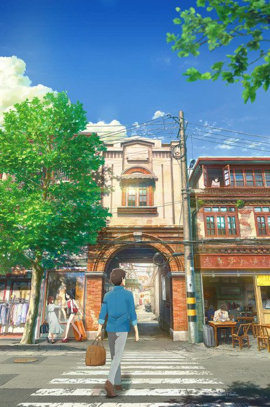

Smile Down the Runway
ランウェイで笑って
Chiyuki, a girl who dreams of being a model but is too short, teams up with Ikuto, a boy who dreams of being a fashion designer.
After the anime, read the manga from Chapter 77.
7.3AniList score
—Animeter, no votes yet
12episodes
Rate it or report where you stopped
Is it worth pushing through?
Built from what visitors report across all 12 episodes.
Loading reports…Checking what other people said about this one.
Sign in above with your email to add your report.
More like Smile Down the Runway
 Original7.7
Original7.7
 Film8.6
Film8.6

Film6.9 Unclear8.7
Unclear8.7
 Film7.7
Film7.7
 Manga Ch. 388.3
Manga Ch. 388.3
 Original8.0
Original8.0
 Done8.1
Done8.1
 Manga Ch. 407.3
Manga Ch. 407.3
 Film8.3
Film8.3
 Original7.3
Original7.3
 Done8.5
Done8.5